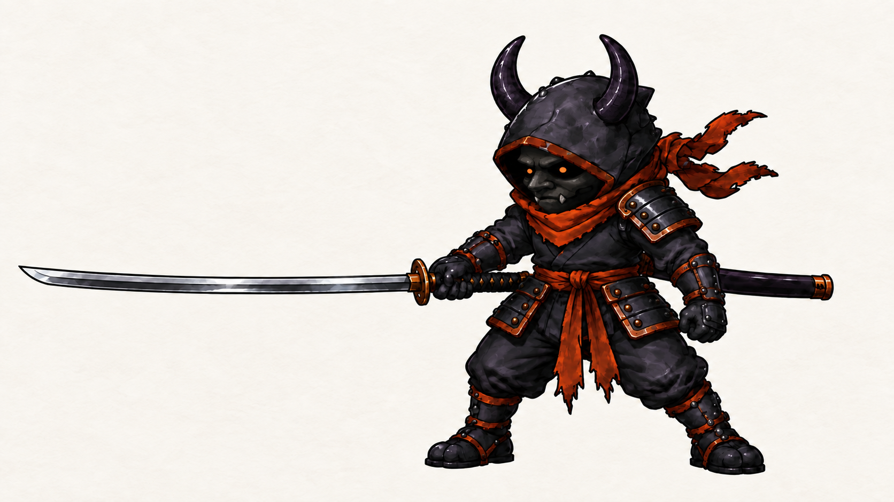
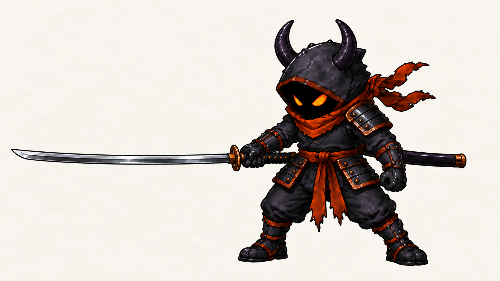
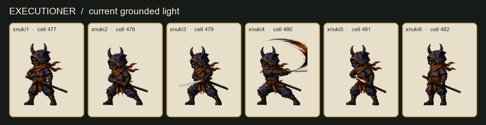
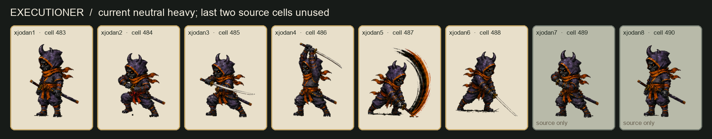
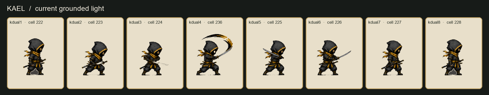
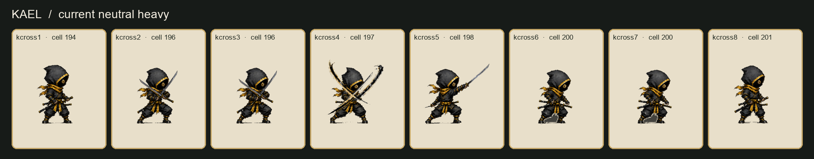

Executioner and Kael · complete sword swing
Anthony prefers clean white FX and wants a physical swing that travels through full reach, accelerates sharply, follows through, and settles. These are the current packed game cells for diagnosis. No new sword art or game changes are installed here.
Corrected design direction
Approved look: Anthony approved the masked long-katana design below. It uses his Japanese demon mask with two tiny circular orange real eyes recessed in the hood shadow, one shoulder armor pad, and both waist pads. The mask does not have to appear in every future animation frame. The unmasked image remains available for comparison. This appearance approval does not select animation frames or install sprites.

Compare the original unmasked design Anthony liked


Exact long-katana angle reference · Previously approved Executioner pose


Shoulder-bump rule: his one armored shoulder leads and makes contact. Keep the pad on the striking side in every bump pose and in mirrored playback.
For Kael, the light cut uses his short blade. His heavy uses his one long katana for reach while his one short sword guards the inside line; both arms move on separate paths without the blades tangling. See the new approved key-pose studies.
Each strip uses one fixed crop for its row. Gold-framed cells are selected by the named attack; gray Executioner cells exist in the source but are not played by that neutral-heavy route. The strips show drawings, not gameplay timing.
Executioner · grounded light

Executioner · neutral heavy

Kael · grounded light

Kael · neutral heavy

Redraw target
- Planted anticipation with hips and shoulders wound against the cut.
- Fast connected blade-tip travel through a large arc, with a readable breakdown or directional smear.
- Full opponent-facing reach on the contact drawing, tied to the actual blade and body.
- Blade continues past contact, with torso and scarf follow-through.
- Distinct recovery and smooth return to guard.
The preferred clean white trail follows the measured blade path and leaves a substantial tail behind the tip. It cannot make a short sword pose look like a complete swing on its own. Detailed review brief and exact source mapping.